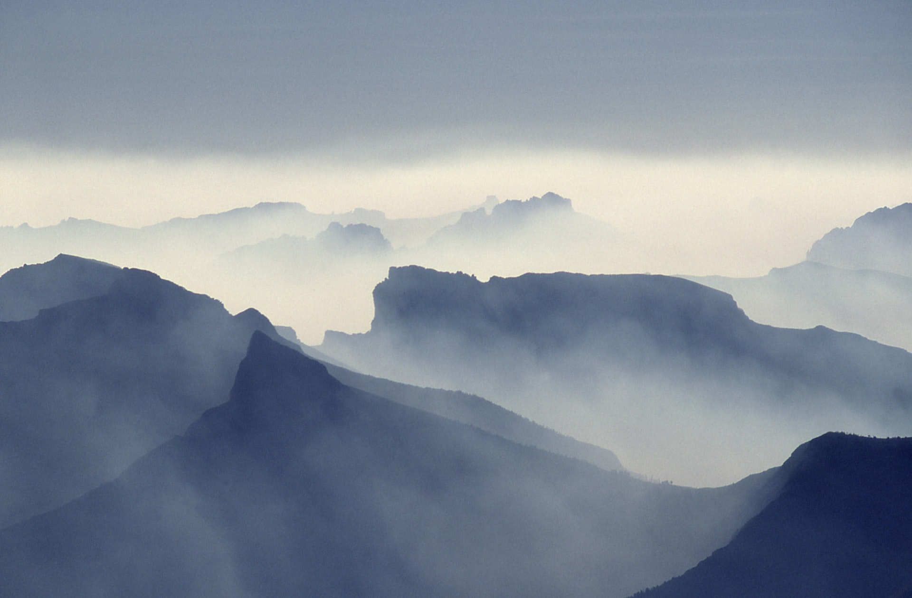

Being outside is desireable as long as you don't freeze, roast, get eaten, etc. Being a hostile place for the programmer's equipment, such creatures tend to stay within their own domociles.
Creation
Through the valley
Over the glaciers
Off the cliffs

To misty mountains cold
Nature never taught me that there exists a God of glory and of infinite majesty. I had to learn that in other ways. But nature gave the word glory a meaning for me. I still do not know where else I could have found one.
- C. S. Lewis
Call to action! It's time!
Quick! Click this button! It doesn't work! ... Do it anyway! :D